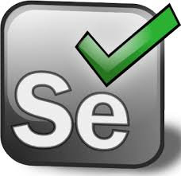

אודות הפרויקט
פרוייקט בדיקות אוטומציה בוצע על אתר "IHERB" ,
IHERB הינו אתר גלובלי שמוכר בעיקר מוצרים טבעיים מסוג תוספי מזון, קוסמטיקה, איפור, ספורט, מזון כללי ומוצרים לבי,
לתינוקות ולבעלי חיים כאשר רוב המוצרים באתר הינם מוצרים טבעיים.
מטרת הפרוייקט הינה לכתוב תשתית אוטומציה לבדיקת מערכת Web מבוססת וקיימת ,
לבחון את הרכיבים השונים בה, תוך מתן דגש על גיוון הבדיקות.
מבנה הפרויקט
מימוש של Page Object Model
לכל דף לוגי במערכת שאנחנו בודקים אנחנו נגדיר class חדש בקוד שלנו, בו נגדיר את הפעולות אותן נרצה לעשות על הדף ונממש מתודות שעושות זאת.
נגדיר את האלמנטים על הדף על מנת לממש את המתודות .נממש מתודות לשם ולדציות (לבדוק האם הטסטים שלנו הצליחו או לא).
בנוסף אנחנו נעטוף את פעולות הסלניום תחת class (נקרא לו BasePage ) וכל הקלאסים בהם אנו משתמשים ירשו מאותו קלאס.
נעשה הפרדה בין מימוש המתודות המגדירות את הפעולות על הדפים לבין כתיבת הטסטים .אנחנו נגדיר שני packages שונים:
אחד ל-page objects שיכלול מימוש של הדפים והפעולות עליהם וכן BasePage.
וה-package השני יהיה לטסטים
מימוש של PageFactory
מאפשרת לכתוב קוד מסודר במטרת שימוש חוזר בקוד, ללא שכפול ובעיקר מאפשרת תחזוקה של הקוד בצורה היעילה ביותר,
שכן במידה ויהיו שינויים באלמנט מסוים או בפעולה מסוימת שנרצה לבצע, ניתן לזהות ישר באיזה דף/עמוד במערכת התבצעו השינויים ולגשת ישירות
שימוש של TestNG
מאפשר להריץ כל קלאס בנפרד וגם להריץ את כל הקלאסים ביחד.TestNG מאפשר לנו לעשות זאת בצורה פשוטה וקלה על ידי יצירה של קובץ xml
שמכיל בתוכו את רשימת כל הקלאסים. ואז, במקום להריץ כל קלאס בנפרד אנחנו פשוט מריצים את קובץ ה- XML.TestNG מאפשר לנו
הרצה של מספר דפדפנים בצורה מקבילית ובכך לחסוך חלק גדול מהזמן ריצה שלנו.נוכל לדעת איזה טסט עבר ואיזה טסט נכשל.
נוכל לקבל דו"ח כללי שמסכם לנו את כל התוצאות? איזה טסטים עברו ואיזה נכשלו. נוכל לכתוב מספר טסטים בתוך קלאס אחד.
עבודה עם Assertions
Assert הוא קלאס והוא בא לעזור לנו לעשות אימות של הנתונים ולעזור לנו להחליט האם הטסט שלנו עבר או נכשל.
הוא static – ולכן אפשר לגשת ישירות למתודות ללא יצירת אובייקט .אם תנאי מסוים לא מתקיים, אז ה-Assert יזרוק לנו שגיאה
עבודה עם קבצים ונתונים דינמיים:
• שימוש בקריאת נתונים בצורה דינמית מתוך קובץ קונפיגורציה.
בניית 2 packages:
Data 1. יכיל קובץ configuration.properties
Utils - 2. יכיל את הקלאס לקריאה מקובץ הקונפיגורציה
• שימוש בדיקות בצורה ייחודית עם נתונים דינמייםDDT
לאחר שבנינו מספר טסטים בתשתית האוטומציה שלנו, סביר להניח שנרצה גם לבנות טסטים
על מנת לעשות זאת נשתמש בשני כלים:
1.היכולת של TestNG לעשות זאת בקלות על ידי קבלת אובייקט דו ממדי (טבלה) של נתונים .DataProvider
2.קריאת נתונים מתוך excel ונהפוך את הנתונים האלה לאובייקט דו ממדי כך שTestNG יוכל לעבוד איתם
עבודה מל alerts ואיך להתמודד עם חלונות מסוג alert
עבודה מול Frame
שימוש ב"הדלקת" האלמנטים
על מנת שאנשים יראו איך האוטומציה רצה יש "להדליק" את האלמנטים על הפעולות שאנחנו עושים. יש לתת מספר צבעים שונים לפעולות,
למשל לחיצה על כפתור או הכנסת טקסט בצבע כחול, ולידציה (קריאת טקסט) בצבע כתום כל מה שצריך זה להוסיף קוד שמריץjavascript
והוא יעטוף את האלמנט בצבע.את הקוד רצוי להכניס לתוך ה BasePage תחתה מתודות המתאימות
שימוש צילום מסך על כל טסט שנכשל
לקחת צילום מסך מספר שורות קוד שעושות את זה. כמובן שאפשר לשחק עם הדרך בה אנחנו שומרים את שמות הקבצים ואיפה אנחנו שומרים אותם.
על מנת להשתמש בקוד יש להוסיף את הספריות שממשות את הקוד הזה
מחלקות טסטים STD
1.עדכון שפה/מטבע/מדינה למשלוח (MainPageChangeLanguageCurrencyShippingTest)
2. רישום לאתר (MainPageSignInTest)
3. חיפוש מוצרים ( SuperDealsPageSearchByTest)
4. מיון מוצרים לפי מחיר (SuperDealsWomenPageSortBySelectPriceTest)
5. סינון מוצרים לפי קריטריונים (SuperDealsWomenFiltersTest)
6. הוספת מוצר לסל ( כולל הוספה/עדכון /ביטול מןצרים) (SuperDealsWomenAddToCartTEST)
7. יצירת והוספה מוצר לרשימת מוצרים החדשה(כולל העברה לסל/ביטול ) (SuperDealsWomenCreateNewFolderListTest)